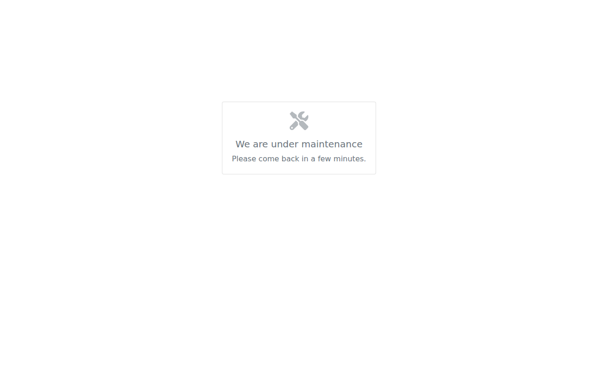
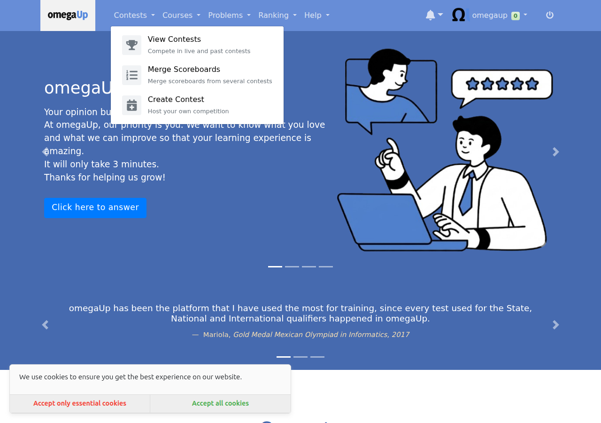
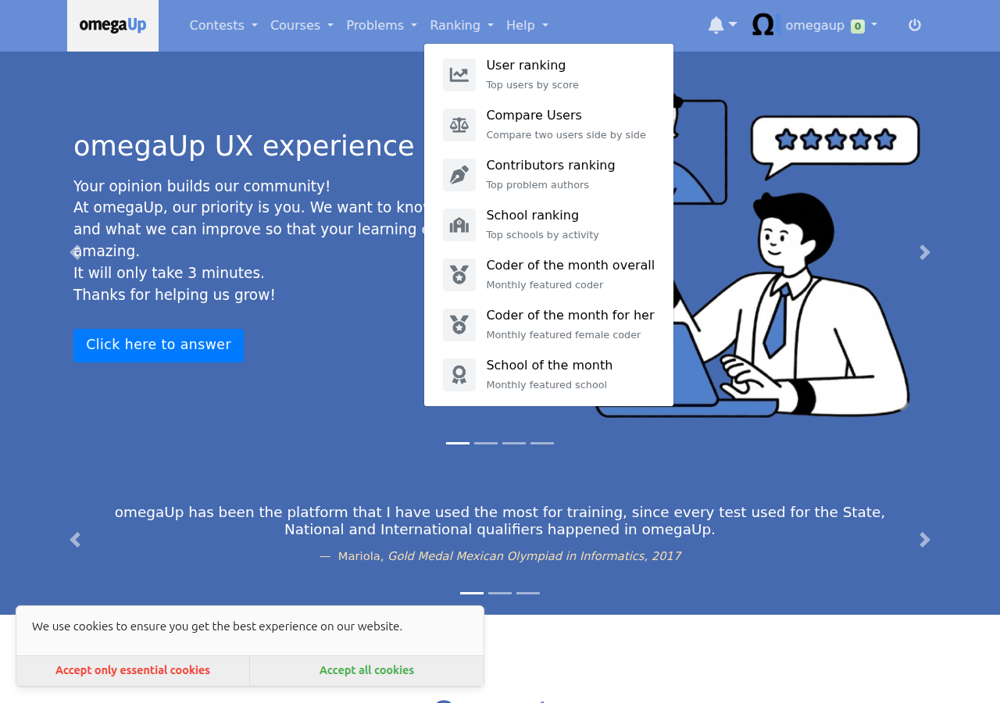
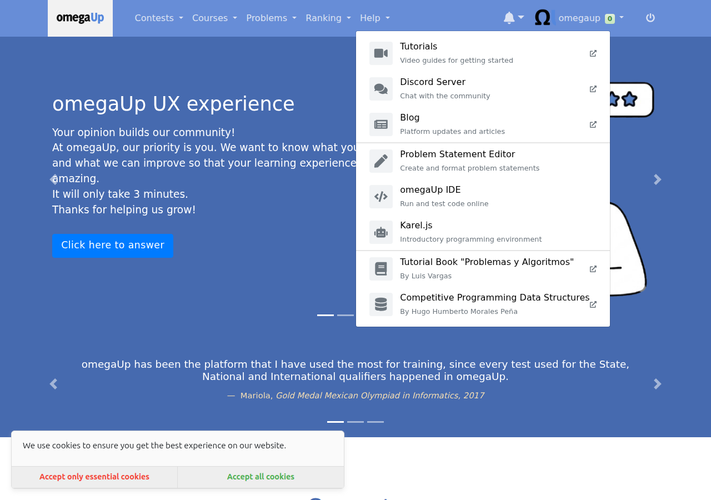

I made omegaUp's background jobs visible.
omegaUp runs a handful of jobs every night: rankings, badges, feedback, the model that suggests what to solve next. Nobody was watching any of them. If one failed, nothing said so, and the first sign was a student noticing their solve had not counted. I built the layer that watches them.
If you read nothing else
The Cron Control Plane
A registry of every job, a history of every run, a lock so two copies can never overlap, an admin page to see it all, and a rerun button that is safe to press.
Model training, measured
The problem recommendation model is now trained on a schedule, its quality is recorded every time, and a guardrail refuses to publish a model worse than the one already serving students.
Problem health checks
A nightly job that finds problems which quietly stopped working, so the platform hears about them from itself rather than from a frustrated student.
Silent failure is the default
omegaUp is a free competitive programming platform used across Latin America. Behind it, a few Python scripts run on a schedule and do the unglamorous work: recompute the rankings, hand out badges, aggregate the feedback students leave on problems, train the recommendation model.
In production only three of them are actually scheduled, and the order they run in is enforced by nothing more than the gap on the clock between them. What kept bothering me is that nobody was watching.
- There was no record that a job had run at all, so a failure last night was invisible today.
- Nothing stopped two copies of the same job running at once. The ranking job used to delete every row of the rankings table and write fresh ones, so two copies overlapping could leave half a leaderboard. No error is raised when that happens. It just silently produces wrong data.
- An admin who wanted to rerun a job needed shell access to a production pod.
- A student had no way to know how fresh the rankings were.
None of that is exotic. It is the ordinary way scheduled work goes wrong, and it stays hidden precisely because it is quiet.
How it fits together
Everything below is one idea: every job goes through the same small piece of code on its way in and out, and that is what makes all the rest possible.

The Cron Control Plane
Twelve pull requests, built as a stack where each one depends on the one below it, cutting from the database through to the page.
A registry and a history
#9995 adds two tables. One lists the jobs that exist, with their schedule and an enabled flag. The other stores one row per execution: when it started and finished, how long it took, whether it worked, how many rows it touched, the timing of each step inside it, and the error text if it failed. #9996 wraps both in typed data access objects so nothing else writes raw SQL against them.
One shared runner
#9998 is the keystone. It is one small helper that a job wraps its main() with:
| with lib.runner.run(parser.prog, args) as cron_run: with cron_run.phase('update_users_stats'): update_users_stats(...) cron_run.set_rows_affected(rows) |
On the way in it checks whether the registry says this job is switched off, takes a lock, and writes a row saying the job has started. On the way out it records the outcome, the duration, the per step timings and any error, then releases the lock.
Why the lock lives in the database
These jobs can run on different machines, so a lock file on one machine's disk means nothing to a job on another. The database is the one thing they all share. It also solved the thing I was most worried about: if a job dies while holding the lock, the database ties that lock to the connection, so when the process dies the lock releases by itself. A crash cannot jam the door shut forever, and I did not write a line of code for that. Choosing the database as the place gave it to me.
Why the history stores a name, not an id
Juan Pablo asked about this in review, and the textbook answer is that I should store the id. Three reasons I did not. The runner writes the "started" row before it ever touches the registry, using the script's own name. Some jobs that use the runner are not in the registry at all, and if the history demanded a registry id those runs either could not be recorded or the runner would start creating registry rows by itself, which turns a curated list into one that fills itself with junk. And this is a history table, so it should survive a job being renamed or removed.
A rerun button that does not open a door
#10021 is the one I thought hardest about. The obvious version is that the button sends a request and the server runs the job. I deliberately did not do that. The moment a web page can cause a program to run on your servers you have built a door, and doors get picked.
Instead the button writes down a request. A separate trusted worker, already running on the inside, picks that row up and runs the job, and only jobs on a fixed list it knows about. The web page never runs anything, it leaves a note. Two things fall out for free: every rerun is recorded, so you can see who asked for what and when, and the person pressing the button needs no server access, which was the entire point.
A guardrail on the rankings
#10011 checks the freshly computed ranking before it is published, inside the same transaction. If it is empty, if scores have gone negative, or if more than half the previously ranked users have vanished, it raises and the whole thing rolls back.
I proved that rather than asserting it. I ran the real job against a seeded database twice. On the happy path it logs that the audit passed and exits zero. On a forced failure it raises, exits non zero, and the checksum of the rankings table is identical before and after, which is what "the rollback left the data untouched" actually means.
The page
#10008 puts /admin/crons on top of the API, and #10048 makes it readable: a health card per job with its success rate and average duration, filters, "2 hours ago" style times with the exact timestamp on hover, job names shown as "Update rankings" rather than update_ranks.py and schedules as "Every day at 08:19" rather than 19 8 * * *, with the technical value kept on hover in both cases.
Scheduled recommendation model training
omegaUp has a model that answers "this student just solved problem X, what should they try next". Before this work it was an on demand script. Nobody was on the hook for running it, there was no record of what any past training produced, and a bad run would silently overwrite the good model file that was serving real students.
Now every run writes down how good the model it produced was, using a MAP score. That is a single number between zero and one measuring how often the problem the model suggested next turned out to be one the student actually solved, weighted so a good suggestion near the top of the list counts for more. Higher is better. On the dashboard I put that explanation behind an info icon in those exact words, because no admin should be expected to know the term.
The guardrail applies two rules before the model file is written. An absolute floor, so a model below a minimum score never ships. And a regression bar against the last published model, because the floor on its own only catches disasters: a model that squeaks over the bar while being clearly worse than the one it replaces would sail straight through.

When either rule fires the old model file stays exactly where it is, a row is stored with the reason in plain words, and the run is marked as a failure so it is visible rather than silent.
Automated problem health checks
A problem on omegaUp can stop working after it is published, and nothing errors loudly. Students just hit a wall. Until now the only signal was somebody filing a report, which means the platform found out about broken problems from the people it had already failed.
The job runs nightly and looks for four specific things.
| Check | Severity | What it means |
|---|---|---|
| judge_errors | error | Five or more recent submissions to one problem came back as a judge or validator error. Students are submitting correct code and getting a system failure. The worst one, because to the student it looks like their fault. |
| no_languages | error | A public problem with no submission languages enabled. Listed, browsable, and impossible to submit to. |
| never_solved | warning | Public, twenty or more submissions, zero accepted. Either the test data is wrong or the statement is misleading. A warning rather than an error, because a genuinely brutal problem can look like this. |
| deprecated_public | warning | Retired, but still visible to students. |
How the findings are stored matters as much as the checks. Each one is upserted against a unique key on the problem and the check type, so it keeps the date it was first detected. That is the difference between "this is broken" and "this has been broken for three weeks". Running the job twice produces no duplicates, and a finding that stops appearing is marked resolved rather than deleted, so the history survives.
I built it database only, with no access to the problem files. Those sit behind a service that needs signed authentication, and they are already validated when a problem is uploaded. The breakage this job catches happens after that, which is exactly what the database knows about. So it needed no new infrastructure, and no dashboard code either.
What I proposed, and how it grew
My proposal was narrow. It was mostly about cleaning up four Python scripts: five specific SQL problems, the near total absence of unit tests, fourteen bare except: blocks, some magic numbers, badge atomicity, and a NOW() string replacement. The test situation was the starkest part. When I wrote it, two of the four scripts had zero Python unit tests between them.
Three honest things happened to that proposal.
Eight items were solved by other contributors
Before or during my coding period, eight of my proposal items were merged by other people. The correlated subquery rewrite I had planned for week four, for instance, was merged by someone else before I got there. I verified each against main and re-scoped rather than redoing finished work, and tracked the active lanes I needed to stay out of so I would not collide with people working on school of the month, incremental feedback aggregation, or the New Relic integration.
One item was wrong, and I killed it myself
My proposal committed to rebuilding the rankings in a second table and swapping it in with RENAME TABLE. When I researched it properly in June I found five problems with it, and worse, the problem it was meant to solve had already been fixed by somebody else. So I withdrew my own funded proposal item and replaced it with an upsert (#9903). Details in Challenges.
One item did not exist
Proposal problem 5, duplicate badge notifications, I could not reproduce. The per badge commit and rollback that had landed in an earlier pull request already rolls back the badge and its notification together, so the scenario does not happen. I recorded that as a finding rather than inventing a fix for it.
Then the midterm changed the shape of the second half
I passed the midterm, and the feedback was that the work so far did not add up to one thing you could point at. It was many small, individually useful improvements. What was wanted was something vertical: one project cutting through the database, the backend, the jobs, the interface and the tests, where the result is a feature somebody can actually see.
That was fair. Rather than pick the next project alone, I read omegaUp's production deployment repository to find out what was actually true, wrote up fourteen candidate projects, and sent them to my mentor with the note that I was not attached to any of them and would rather know what the organisation needed.
So the second half became three projects sharing one foundation. None of the first half was wasted, because a vertical project needs exactly that kind of groundwork underneath it.
Work outside the cron project
A generic "view unavailable" component
#9919. omegaUp needed a consistent way to tell a user that part of the site is switched off. Rather than write that message into one page, I built one component the whole platform can use, in every supported language. Juan Pablo then pointed out that the way I had wired it in would mean copying a file every time another view needed disabling, so #10025 made the entry point generic and driven by the page payload.


Rebuilding the navigation from one configuration
#9968, building on #9871 and #9801. The navbar menus were hand written markup repeated per menu. I extracted a reusable item with an icon, a title and a description, then rebuilt every menu from a single configuration file with per entry visibility rules, which is the groundwork for showing different entries to different kinds of user.





An honest footnote. #9967 was the earlier version of that change and I closed it myself: #9968 was stacked on top of it and got squash merged first, which carried #9967's content into main and left nothing for it to do.
Every pull request
Thirty one pull requests between 26 May and 3 August. Each one has an issue written before it.
Cron Control Plane
| PR | Opened | Status | Change | What it does |
|---|---|---|---|---|
| #9995 | 2026-07-13 | merged | +64/-0 | add cron control plane tables |
| #9996 | 2026-07-13 | merged | +1345/-3 | add cron control plane dao |
| #9998 | 2026-07-13 | open | +497/-0 | add cron runner library |
| #10000 | 2026-07-13 | merged | +333/-0 | add cron admin api |
| #10003 | 2026-07-14 | open | +522/-35 | record update ranks runs |
| #10008 | 2026-07-14 | open | +548/-0 | add cron admin dashboard |
| #10009 | 2026-07-14 | open | +545/-89 | record badges and feedback runs |
| #10011 | 2026-07-15 | open | +580/-35 | add ranking audit guardrail |
| #10021 | 2026-07-16 | open | +3306/-3 | add cron rerun |
| #10022 | 2026-07-16 | open | +602/-132 | record remaining cron runs |
| #10023 | 2026-07-16 | open | +3336/-3 | add cron dashboard e2e |
| #10048 | 2026-07-26 | open | +4438/-3 | improve cron dashboard with health cards filters and auto refresh |
Cron tests, queries and reliability
| PR | Opened | Status | Change | What it does |
|---|---|---|---|---|
| #9883 | 2026-06-02 | open | +542/-0 | feat(cron): add unit test infrastructure and aggregate_feedback/utils tests |
| #9889 | 2026-06-07 | open | +942/-23 | feat(cron): add update_ranks unit tests |
| #9900 | 2026-06-12 | merged | +22/-30 | fix(cron): parameterize coder_of_the_month queries |
| #9901 | 2026-06-12 | merged | +16/-16 | fix(cron): replace bare except clauses with typed except |
| #9903 | 2026-06-12 | merged | +38/-2 | fix(cron): merge user rank with upsert instead of full reinsert |
| #9914 | 2026-06-19 | open | +203/-80 | add structured phase logging to crons |
| #9920 | 2026-06-21 | open | +1146/-23 | feat(cron): add assign_badges unit tests |
| #9940 | 2026-06-26 | merged | +29/-15 | refactor(cron): name acl/role magic numbers with constants |
Recommendation model training
| PR | Opened | Status | Change | What it does |
|---|---|---|---|---|
| #10050 | 2026-07-27 | open | +3957/-133 | add recommendation model runs table |
| #10051 | 2026-07-27 | open | +4314/-134 | record and guard recommendation training |
| #10052 | 2026-07-27 | open | +4908/-133 | add recommendation model dao and dashboard |
Problem health checks
| PR | Opened | Status | Change | What it does |
|---|---|---|---|---|
| #10065 | 2026-07-31 | merged | +34/-0 | add problem health checks table |
| #10066 | 2026-08-01 | open | +4394/-133 | add problem health check cron |
| #10069 | 2026-08-03 | open | +5157/-133 | show problem health findings for admins |
Alongside the main project
| PR | Opened | Status | Change | What it does |
|---|---|---|---|---|
| #9871 | 2026-05-26 | merged | +352/-150 | Extract NavbarItem component for help menu |
| #9919 | 2026-06-21 | merged | +142/-0 | add view unavailable component |
| #9967 | 2026-07-04 | closed | +368/-67 | extend navbar item style to remaining submenus |
| #9968 | 2026-07-04 | merged | +676/-233 | build navbar menus from a single configuration |
| #10025 | 2026-07-16 | merged | +25/-6 | make view unavailable entrypoint generic |
Every issue
Thirty issues. I wrote the issue before the pull request every time, which is how the three parent issues ended up being the spine of the whole second half.
| Issue | Opened | Status | Title |
|---|---|---|---|
| #9868 | 2026-05-26 | closed | As a developer, I want a reusable NavbarItem component so that submenu entries are easier to maintain |
| #9869 | 2026-05-26 | closed | As a contributor, I want editable fields in the feature request form so that I can fill in the As a / I want / so that prompts directly |
| #9870 | 2026-05-26 | closed | Refactor navbar help submenu into a reusable NavbarItem component |
| #9882 | 2026-06-02 | open | Add unit test infrastructure for cron scripts |
| #9888 | 2026-06-07 | open | Add unit tests for update_ranks.py ranking logic |
| #9890 | 2026-06-07 | open | Add unit tests for assign_badges.py |
| #9897 | 2026-06-11 | closed | Add a generic "View unavailable" component |
| #9899 | 2026-06-12 | closed | Parameterize string-built queries in coder_of_the_month.py |
| #9902 | 2026-06-12 | closed | Avoid full delete and reinsert of User_Rank in update_ranks |
| #9904 | 2026-06-12 | open | Prevent and merge duplicate school profiles |
| #9913 | 2026-06-19 | open | Emit structured per-phase logs from cron scripts |
| #9939 | 2026-06-26 | closed | Replace acl_id/role_id magic numbers in cron scripts with named constants |
| #9962 | 2026-07-03 | open | Extend the navbar item style with icons and descriptions to remaining submenus |
| #9966 | 2026-07-04 | closed | Build the navbar menus from a single configuration with visibility rules |
| #9992 | 2026-07-13 | open | Cron Control Plane : an observability and operational tooling for background jobs (parent) |
| #9993 | 2026-07-13 | closed | persistant cron execution history by registry and run tables |
| #9994 | 2026-07-13 | closed | DAOs for the cron tables |
| #9997 | 2026-07-13 | open | Reusable cron runner that records runs and prevents overlap |
| #9999 | 2026-07-13 | closed | Admin API for cron run history and health |
| #10002 | 2026-07-14 | open | Record update_ranks executions through the runner |
| #10004 | 2026-07-14 | open | Admin dashboard page for cron jobs |
| #10007 | 2026-07-14 | open | Record assign_badges and aggregate_feedback through the runner |
| #10010 | 2026-07-15 | open | Pre-publish guardrail for the ranking job |
| #10017 | 2026-07-16 | closed | Make the view unavailable entrypoint generic and driven by the payload |
| #10018 | 2026-07-16 | open | Let admins safely rerun a cron job |
| #10019 | 2026-07-16 | open | Record the remaining crons through the runner |
| #10020 | 2026-07-16 | open | End to end test for the cron dashboard |
| #10047 | 2026-07-26 | open | Improve the cron dashboard with health cards, filters, relative times and auto refresh |
| #10049 | 2026-07-26 | open | Make the recommendation model training scheduled, recorded and guarded (parent) |
| #10064 | 2026-07-31 | open | Detect problems that silently stopped working (parent) |
How I worked
Tests before the thing that needs them
The cron scripts had no test infrastructure at all when I started. Not thin coverage, none. There was a good reason it had been skipped: these scripts talk straight to the database, so testing "does the ranking logic compute the right order" meant standing up a database with the right data in it first. Slow, awkward, breaks on other people's machines. So it never got done.
I built a fake database instead (#9883), one that behaves enough like the real thing that the existing code runs against it unchanged. Only then could the ranking and badge logic be tested.
Small stacked pull requests, opened one at a time
I restructured everything into a stack: tables, then the code that reads them, then the API, then the page, each small enough to review in one sitting. I also learned to keep the later ones as drafts until their predecessor merges, so nobody opens a pull request full of code they already reviewed. That habit came from getting it wrong once: a stacked pull request got squash merged out of order, which dragged its dependency into main and made that dependency redundant.
The lesson I actually took: reviewer time is the scarcest resource on the project, and optimising my work for my convenience against their attention is a bad trade.
Answering reviews properly
Ankit left thirteen inline comments on my test infrastructure, and several were real bugs in the fake database itself. fetchone() did not advance, so it returned the first row forever and any test looping over results would have passed while testing nothing. SQL matching was case sensitive in one direction. The dictionary argument was accepted and thrown away.
One flagged bug I checked and pushed back on, politely, after tracing it to the real caller and finding it unreachable behind a guard. I documented it as latent rather than patching something that could not happen.
Challenges
The shadow table swap I promised was wrong
My proposal committed to rebuilding the rankings in a second table and swapping it in with RENAME TABLE. When I actually researched it, I found five problems. It is a schema change, so it forces a commit and breaks the single transaction the phase relies on. Copying a table does not copy its foreign key constraints, and the names are database unique, so the swapped table either silently loses three constraints or needs alternating names. It needs privileges the production database user may not have, and I could not verify that. It changes what the coder of the month calculation sees mid run. And it still rewrites every row every day, so the churn is not reduced, just relocated.
Worse, the problem it was meant to solve had already been fixed by someone else. The phase had become a single transaction, and readers already see the complete old ranking throughout. The "users see an empty leaderboard" scenario I wrote the proposal against no longer existed.
So I killed my own proposal item and replaced it with an upsert that stays inside the transaction, needs no privileges, keeps the foreign keys, and follows a pattern already used elsewhere in the same file. I would rather have that conversation than deliver the thing I promised and have it be wrong.
Two required checks that wanted opposite things
After the tables merged, the next pull request started failing in a way I could not resolve. One check demanded a generated schema file be byte identical to the main schema. Another check crashed trying to read that same file. Both were required, so satisfying one broke the other.
The crash was at one specific table, caused by a full text index clause another contributor had recently added that the schema parser did not understand. Nobody had hit it because main's copy of the generated file was out of date and did not contain that line yet. Mine was the first change to regenerate it, so I was the first to stand on a landmine that had been sitting there. The fix was one line in the parser, verified by regenerating everything and confirming the output was byte identical, so the change only relaxes reading and cannot alter what gets generated.
A bug that only writing the test revealed
In the health checks, the step that closes resolved findings was reading the clock after writing the new ones. On a slow run, a finding written moments earlier could be judged "not seen this run" and closed immediately, so the job would report a problem as fixed the instant it found it. The fix was to take one timestamp for the whole run. This is the strongest argument for tests I have from this project, because the bug was in code I had just written and believed was correct.
"No results" and "not working" look identical from the outside
Three of the four health checks fired on the first real run. The judge errors check found nothing, and my first reaction was "good, no broken judges". That was wrong. It found nothing because the development database contained no runs with that kind of error at all, so the check had never been exercised. I was about to ship a check I had never seen work. I seeded the failure case and watched it fire before I trusted it.
The bookkeeping cost of stacking
Keeping the pieces small and ordered is right for reviewers and expensive for me. Every time something merges I rebase the next one so its diff stands alone. When the tables merged the migration was renumbered, so every later database change had to shift too. At one point a change to a shared file had to be propagated across seventeen branches, because they all descended from it. I still think the trade is correct, since the alternative is unreviewable pull requests, but I underestimated the admin.
Nothing merged for the first five weeks
At the midterm, zero of my cron project pull requests had been merged. Everything had green checks and was waiting. That was uncomfortable and not something I could fix by writing more code. My mentors were clear that review bandwidth was the constraint and told me to keep building. The first one landed on 3 July, and sixteen more have landed since.
Merged, in review, and waiting
A report that only lists what landed is not much use, so here is all of it.
Merged
Seventeen of my pull requests merged during the coding period. On the cron project specifically, the whole foundation is now on main: the registry and history tables, the data access layer, the admin API, the problem health checks table, the ranking upsert, the SQL parameterisation, the typed exception handling and the acl and role constants.
Approved, waiting on a merge
#9998, the shared runner, is approved and green. It is also the keystone: four more pull requests sit directly behind it, so merging it unblocks the largest single batch of work.
Green and ready for review
#9883, #9889, #9920, #9914, #10003 and #10008, all mergeable with passing checks.
Built, tested, waiting their turn
Eleven more are open as drafts, kept that way on purpose so they surface one at a time as the pull request below each of them merges. Every one has been run locally and verified end to end in Docker.
What sets the pace now is review time rather than code. I do not say that as a complaint, it is a real constraint on a volunteer maintained project and my mentors have been straight with me about it. Nothing is half built, and nothing is blocked on me.
What comes next
Missed run detection
The system can tell you a job failed, but not that a job never started. That is the one failure mode run history structurally cannot catch, and it is what every cron monitoring product leads with. The schedule is already stored, so the pieces are there.
Failure alerting
Notify admins when a run records a failure, reusing the notification path the rerun dispatcher already uses. This is the piece that turns history into monitoring.
Retention
Nothing deletes from the run history. Fine today, not in two years.
Smaller things: pagination past the fifty run cap, a duration sparkline per job to spot slowdowns as a shape rather than a number, and a next scheduled run column computed from the schedule already stored. And the one I deliberately left alone, model versioning and rollback, which needs a maintainer decision about the production file layout before it is worth writing.
Thanks
Juan Pablo, for reviews that were consistently specific and for pushing back on the parts that deserved it. The question about storing a name instead of an id made the schema better, and the request to split a large pull request changed how I work rather than just how I structured that one change.
Ankit, for the review of my test infrastructure that found real bugs in it. Being told early and precisely that my fake database was subtly wrong was worth more than any approval.
omegaUp, for letting a contributor propose a direction, argue for it with evidence, and then actually build it.